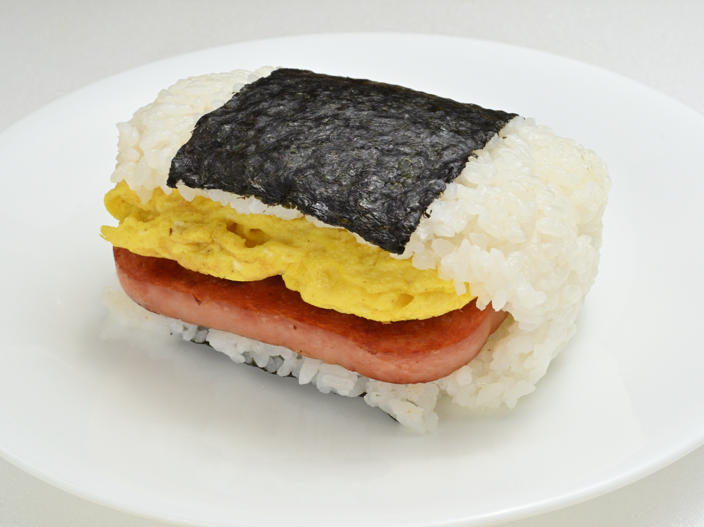

曇りガラスの向こう側
何となく入りづらい雰囲気――そう感じられることもある喜楽の外観です。 けれど、思い切って引き戸を開けると、そこには静かでノスタルジックな空間が広がっています。 そんな声を、ご来店のお客様からいただきました。
🍚チャーハンシリーズ🍚 「ザ・町中華‼️」 美味い🥺 皆様の評価に納得の町中華。 何となく入りづらい雰囲気はありましたが、思い切って入ってしまえば、そこにはノスタルジックな空間が🥺 餃子 小ぶりながら肉がギッチリ詰まった美味しい餃子⤴️ 生ビールが進みます🥺 ラーメン 普通の醤油ラーメンではなく、何とも表現の仕方が難しいスープですが、珍しく飲み干してしまう程美味しい🥺 チャーハン 色々具材が入っており、彩りも美しく、ワクワクしながら食べれる一品で、これもまた美味しい🥺 パラパラではなくしっとり系の雰囲気ですが、油っこくなく、大盛りにしなかったことに後悔😑 近くに来たらまた寄らせていただきます。 本気で美味しかったです。 ご馳走様でした‼️
静かな店内
テレビを消した、静かな昼
「お昼の時間は、テレビも消してるので、めちゃ静かな店内です」 「お昼はテレビを消しているようで店内は静かだった」 ――そんな声を、複数のお客様からいただいています。静かに、落ち着いてお食事いただける時間が流れています。
整頓された、清潔な店内
「店内は、清潔感があります。物もキチンと整頓されており」というお声もいただいています。 飾らないぶん、隅々まで整えられた店内です。
クチコミでご紹介いただいた料理
※クチコミでご紹介いただいた料理の一例です。お品書き・価格については、お電話にてご確認ください。
お客様の声
土曜の昼時に訪れたお店。 ラーメン屋もお蕎麦屋さんも行きたかったけど町中華を探してみると駅近にあったので訪問。 お昼はテレビを消しているようで店内は静かだった。 麺は細麺と中太麺が選べたので中太麺をチョイスした。 ラーメンは醤油であっさりしていましたが美味しくいただきました。 半チャーハンも添えてスープまで完飲。 ごちそうさまでした😋 ウチの近くにあると良いな…っていうお店でした✨😊
アクセス
PHOTO SAMPLE(フリー素材によるイメージ写真)

